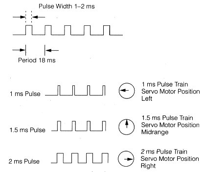

You can control the "on time" of the PWM sigals with updatePwmCompare function / method. PWM signals available on Little Wire have resoultion of 8 bits. That means if you give 128 as compare value, output signal will be half time high, half time low.
You can also change frequency of the output signal by changing prescale value. Default value is 1024 which corresponds to 63 Hz. This is the closest one to standart servo driving signal.
1 ~ 64 kHz
8 ~ 8 kHz
64 ~ 1 kHz
256 ~ 252 Hz
1024 ~ 63 Hz
In theory, when 20 ms perioded PWM signals between 0.8 ms and 2.2 ms "on time" applied, standart servos travel between their limits. But i experienced that each servo behaves differently. So, instead of writing a servo driving function based on those theoric values, i supplied a rather low level PWM control function. So, here a little calculation:
63 Hz => 15.8 ms period.
We have 8bit resolution. -> 256 step
Therefore, each compare value corresponds to => 0.06 ms
We are looking for 0.8 ms and 2.2 ms for our theoretic boundaries
0.8 / 0.06 = ~ 13 unit
2.2 / 0.06 = ~ 36 unit
That means if you want to drive a servo, first make sure PRM prescaler is at default value 1024 and then start by giving 13 to 36 as compare value and observe the behaviour of your servo. According to your observations take notes about which compare values bring your servo to its edges.
UPDATE: I recently wrote a servo library for Little-Wire. It basically gives higher level access to PWM functions. I took the end limit assumptions from Arduino library. If you want to have more control over it, change the limit definitons or use low level PWM functions.